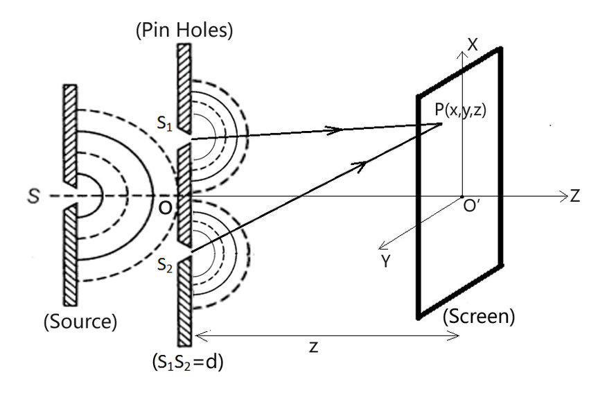

Young's Double Slit Experiment
Introduction
In 1801, Thomas Young demonstrated the wave theory of light for the first time with a double-slit interference experiment. Young created a pinhole in the wall called S1 and S2 and allowed sunlight to pass through it. At first, S1 and S2 are at a reasonable distance from each other on the second screen.
Thomas Young demonstrated how light rays superimpose to form the patterns of light and dark bands.
On the screen, he noticed a few bands of different colours that were bright and dark. To boost the brightness of the bands, pinholes S1 and S2 are substituted with narrow slits, and the sunlight is replaced with a monochromatic source.
Finally, the interference pattern, composed of evenly-spaced bright and dark fringes, is obtained.
What is Interference?
Interference is a phenomenon in which two waves combine by adding their displacement together at every single point in space and time, to form a resultant wave of greater, lower, or the same amplitude.
Types of Interference
1. Constructive Interference :
If the crest of one wave falls on the crest of another wave, then the amplitude of the wave became maximum and it forms the constructive interference of light.
Here, the resultant waves will have the same phase and the same displacement.
2. Destructive Interference :
If the crest of one wave falls on the dip of another wave, then the amplitude of the wave becomes minimum. This phenomenon is called destructive interference.
Here, the phase and displacement of the resultant wave are not the same.
1. Constructive Interference :
If the crest of one wave falls on the crest of another wave, then the amplitude of the wave became maximum and it forms the constructive interference of light.
Here, the resultant waves will have the same phase and the same displacement.
2. Destructive Interference :
If the crest of one wave falls on the dip of another wave, then the amplitude of the wave becomes minimum. This phenomenon is called destructive interference.
Here, the phase and displacement of the resultant wave are not the same.
Setup for the Experiment
When conducting Young’s double-slit experiment, two coherent sources of light must be situated at a distance that is larger than the wavelength of light. Young’s double-slit experiment clarified the light wave theory.
A single light source was diffracted into two slits and employed as a coherent source in the original Young experiment. Modern experiments frequently use lasers as coherent sources.

Derivation of Young’s Double Slit Experiment
Consider a monochromatic light source ‘S’ kept at a considerable distance from two slits s1 and s2. S is equidistant from s1 and s2. s1 and s2 behave as two coherent sources as both are derived from S.
The light passes through these slits and falls on a screen which is at a distance ‘D’ from the position of slits s1 and s2. ‘d’ is the separation between two slits.
If s1 is open and s2 is closed, the screen opposite to s1 is closed, and only the screen opposite to s2 is illuminated. The interference patterns appear only when both slits s1 and s2 are open.
When the slit separation (d) and the screen distance (D) are kept unchanged, to reach P the light waves from s1 and s2 must travel different distances. It implies that there is a path difference in Young’s double slit experiment between the two light waves from s1 and s2.
The light passes through these slits and falls on a screen which is at a distance ‘D’ from the position of slits s1 and s2. ‘d’ is the separation between two slits.
If s1 is open and s2 is closed, the screen opposite to s1 is closed, and only the screen opposite to s2 is illuminated. The interference patterns appear only when both slits s1 and s2 are open.
When the slit separation (d) and the screen distance (D) are kept unchanged, to reach P the light waves from s1 and s2 must travel different distances. It implies that there is a path difference in Young’s double slit experiment between the two light waves from s1 and s2.
Approximations in Young’s double slit experiment
Approximation 1: D > > d: Since D > > d, the two light rays are assumed to be parallel.
Approximation 2: d/λ >> 1: Often, d is a fraction of a millimetre, and λ is a fraction of a micrometre for visible light.
Under these conditions, θ is small. Thus, we can use the approximation sin θ = tan θ ≈ θ = λ/d.
∴ path difference, Δz = λ/d
This is the path difference between two waves meeting at a point on the screen. Due to this path difference in Young’s double-slit experiment, some points on the screen are bright, and some points are dark
Approximation 1: D > > d: Since D > > d, the two light rays are assumed to be parallel.
Approximation 2: d/λ >> 1: Often, d is a fraction of a millimetre, and λ is a fraction of a micrometre for visible light.
Under these conditions, θ is small. Thus, we can use the approximation sin θ = tan θ ≈ θ = λ/d.
∴ path difference, Δz = λ/d
This is the path difference between two waves meeting at a point on the screen. Due to this path difference in Young’s double-slit experiment, some points on the screen are bright, and some points are dark
Position of Fringes In Young’s Double Slit Experiment
Position of Bright Fringes
For maximum intensity or bright fringe to be formed at P
Path difference, Δz = nλ (n = 0, ±1, ±2, . . . .)
i.e., xd/D = nλ
or
x = nλD/d
The distance of the nth bright fringe from the centre is
xn = nλD/d
Similarly, the distance of the (n-1)th bright fringe from the centre is
x (n-1)= (n -1)λD/d
Fringe width, β = xn – x (n-1) = nλD/d – (n -1)λD/d = λD/d
(n = 0, ±1, ±2, . . . .)
Position of Dark Fringes
For minimum intensity or dark fringe to be formed at P,
Path difference, Δz = (2n + 1) (λ/2) (n = 0, ±1, ±2, . . . .)
i.e., x = (2n +1)λD/2d
The distance of the nth dark fringe from the centre is
xn = (2n+1)λD/2d
Similarly, the distance of the (n-1)th bright fringe from the centre is
x (n-1)= (2(n-1) +1)λD/2d
Fringe width, β = xn – x (n-1) = (2n + 1) λD/2d – (2(n -1) + 1)λD/2d = λD/d
(n = 0, ±1, ±2, . . . .)
For maximum intensity or bright fringe to be formed at P
Path difference, Δz = nλ (n = 0, ±1, ±2, . . . .)
i.e., xd/D = nλ
or
x = nλD/d
The distance of the nth bright fringe from the centre is
xn = nλD/d
Similarly, the distance of the (n-1)th bright fringe from the centre is
x (n-1)= (n -1)λD/d
Fringe width, β = xn – x (n-1) = nλD/d – (n -1)λD/d = λD/d
(n = 0, ±1, ±2, . . . .)
Position of Dark Fringes
For minimum intensity or dark fringe to be formed at P,
Path difference, Δz = (2n + 1) (λ/2) (n = 0, ±1, ±2, . . . .)
i.e., x = (2n +1)λD/2d
The distance of the nth dark fringe from the centre is
xn = (2n+1)λD/2d
Similarly, the distance of the (n-1)th bright fringe from the centre is
x (n-1)= (2(n-1) +1)λD/2d
Fringe width, β = xn – x (n-1) = (2n + 1) λD/2d – (2(n -1) + 1)λD/2d = λD/d
(n = 0, ±1, ±2, . . . .)